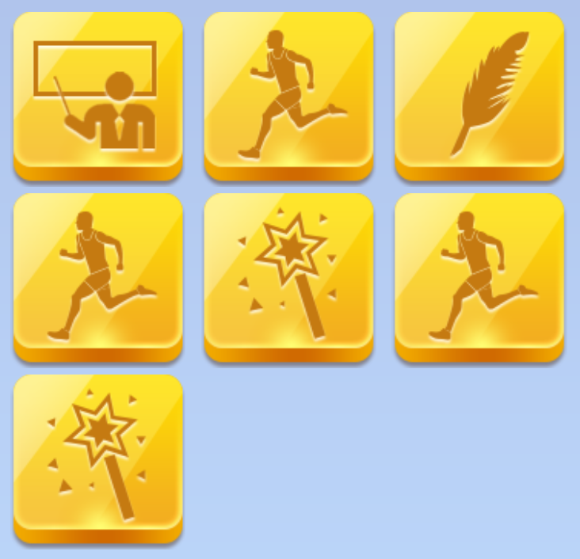

1. 我们的跑步专家制定了13周的跑步初学者训练计划，让你可以开始科学的健身，远离膝盖伤等跑步的病老虎。为了让这种有挑战的训练计划更有趣味，我们采用了游戏化的手段进行处理，每个人可以通过跑步、写文章、玩游戏进行升级，就像参与一个休闲类的RPG游戏，在快乐中，增加人脉，锻炼身体，收获财富。
2. 任务列表：七个图标代表当前这周你需要完成的七个任务，你可以按照自己的兴趣和习惯，选择性的挑选任务完成。跑步任务建议隔天完成。如果自己没有特别偏好，可以按照我们建议的顺序，每天完成一件任务。你也可以通过主界面的“+”入口进行这三种操作，只不过这样完成后得到的积分奖励和贝币，要远小于在任务列表中完成。而且如果你一直没有完成本周任务，延迟多周后，所有积分奖励会被清零。
3. 跑步任务：根据我们的运动提示，完成跑步任务后，我们会增加你的体魄属性值。为了保证这种线下活动的真实性和公平竞争，我们会进行后台人工审核。此外，我们会1对1的对你跑步情况进行指导，希望你能及时而准确的提交跑步成绩记录和截图。
4. 博文任务：完成该任务后，我们会增加你文学力的属性值。希望你通过发布完成任务的心得和经验总结，和社区其他跑步爱好者交流，更好的进行健身，并提高自己写作交流的文学能力。
5. 魔法任务：完成该任务后，我们会增加你的魔法力的属性值。该项能力代表你在线上游戏竞技的能力，也是你帮助别人快乐的魔法能力。：）